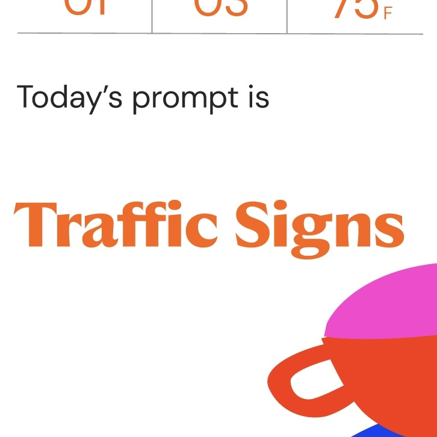
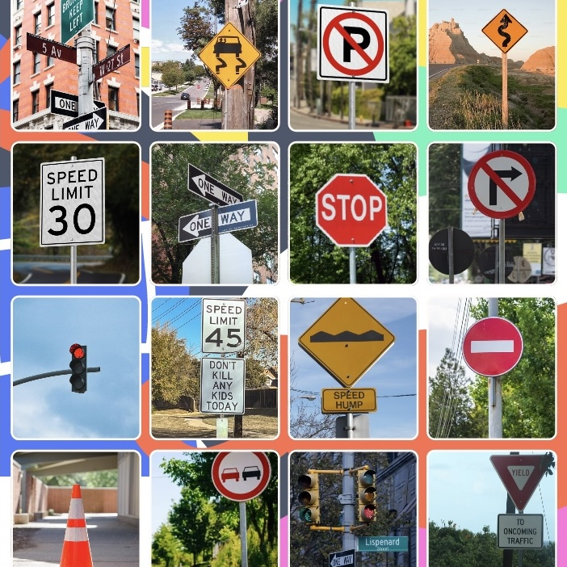
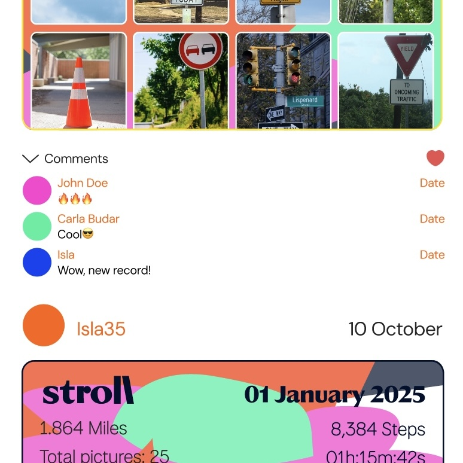
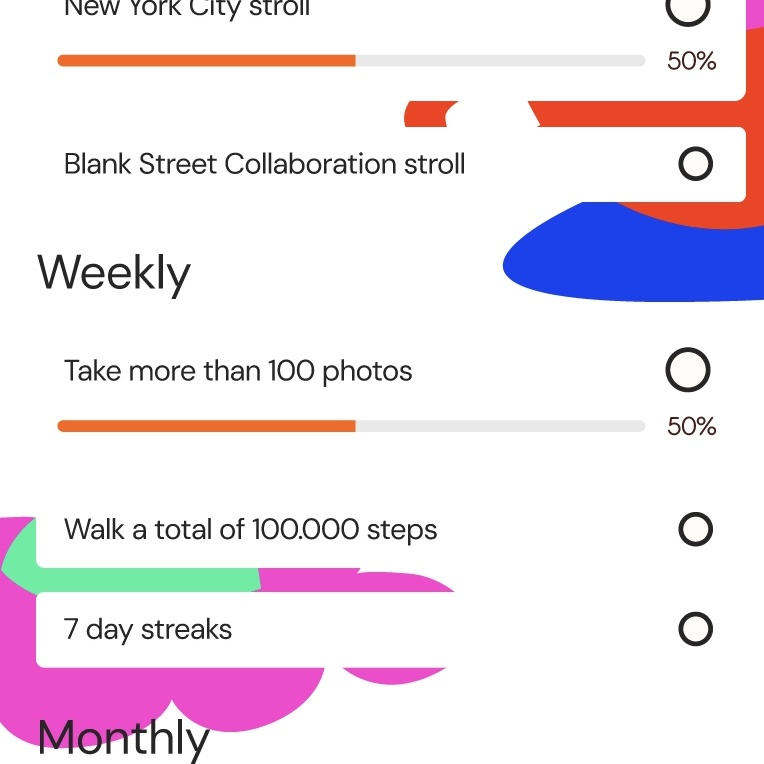
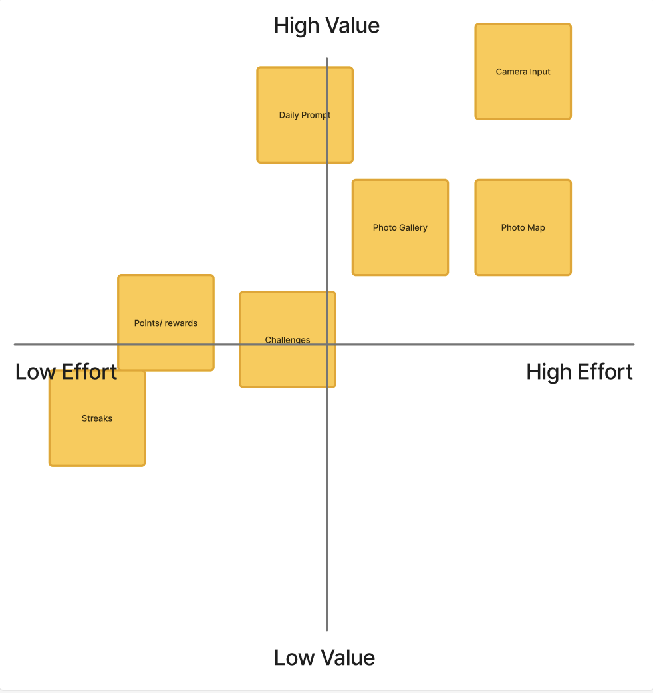

Stroll
August - December 2025

Vision
To make strolling the new scrolling
Mission
Turning screen time into real-world time, sparking true joy one stroll at a time.
Responsibilities
UX Designer · UI Designer · IxD Designer · Brand Identity Designer · User Researcher · Brand Strategist
Tools
Figma · Adobe Photoshop · Adobe Illustrator · Jitter Video · Brainstormed with Claude AI and ChatGPT
Supervisor
Prof. Sally Chung
Here's the problem...
Many young people don’t go out simply because walking feels purposeless when there’s no destination or errand attached. At the same time, they’re busy and often unable to commit to structured exercise routines. Popular fitness trends tend to be high-effort and competitive, making them overwhelming to start and difficult to maintain. This leaves a gap for simple, accessible ways to stay active.
Value Proposition
Stroll is the walk companion app that allows the productive age group to find purpose in walking by gamifying daily walks. Turning walks into non-competitive entertainments.
How Might We
How might we motivate the younger generation to stay active in order to maintain social and mental wellbeing?
Key Features

Daily Prompts
Different prompts to make your strolls fresh and fun.

Photo Gallery
Turning your strolls into a visual gallery that you can revisit.

Tier List
Low pressure motivation that gently pushes you forward.

Stroll Community
Connect with others, share walks, feel connected.

Challenges
Little missions for longer-term goals.
Competitor Analysis

User Persona


Empathy Map


User Journey

Business Plan

Brand Personality

Design Principles


Information Architecture + Feature Ranking


User Testing

HZ
20, Student

SL
21, Student

NS
19, Student

JL
22, Student

CB
23, Young professional
Feature Ranking + Observation


Not puting emphasis on activity tracking
Multiple user testers mentioned that the activity tracking feature makes the app feels more like a health improvement app, taking away the fun and feels dreadful to use. Despite it being one of the main features previously, I took the focus away from logging statistic to mainly walking for fun.
Adding community feature
Though in the first pitch, the idea is to download the Stroll galleries and post it on other social medias to share with friends, a lot of the user testers mentioned that it could be motiating to have in-app connections with friends to collaborate and motivate each other. So i added a Stroll community feature.
Making Stroll's objective more entertaining than health-based
Compared to Stroll's competitors, Stroll is different because it is made to be a healthier form of entertainment for people who do not like to be active. Since most health-based app are very competitive and focuses on number-based improvements, Stroll wants to takeaway that stress as a starting point of a healthier choice.
Brand Competitor Analysis


Branding
Stylescapes


Brand System

Wireframes


Key Takeaways
1. Understanding motivation beyond fitness
Through the user interviews, I realized that people aren’t avoiding being active. They’re avoiding experiences that feel purposeless or mainly do not have enough time to squeeze in another activity. This pushed me to design features that utilizes walking, a low-effort physical activity, and giving it a sense of meaning.
2. Designing for low-pressure engagement
I learnt how to create gentle entry points that encourage consistency without adding stress or expectations to avoid making users overwhelmed.
3. Balancing gamification with calm
This helped me practice using playful mechanics in a way that boosts enjoyment while still keeping the experience streamlined.
4. Designing for real-life context
I learnt to account for some of the user's concerns,like: short attention spans, accessibility differences, preference. Taking user feedbacks, I refined the interfaces to supports the user experience.